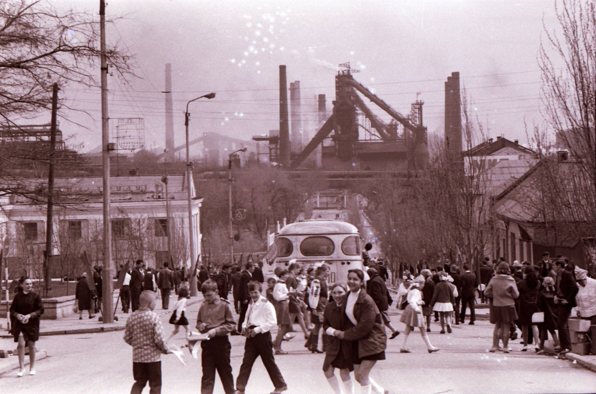
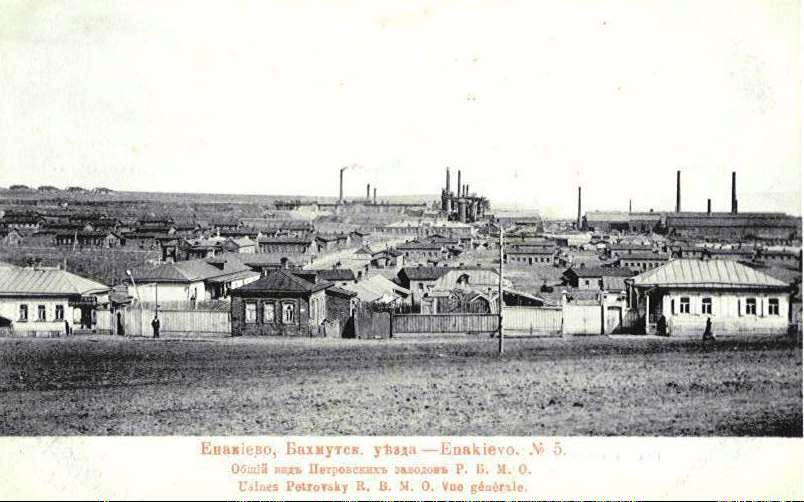

Енакиево
Ена́киево (укр. Єнакієве; с 1928 по 1937 год — Ры́ково, с 1937 по 1943 год — Орджоники́дзе) — город в номинально образованном Горловском районе Донецкой области Украины, административный центр номинально образованной Енакиевской городской общины. До 2020 года был городом областного подчинения. Входит в Горловско-Енакиевскую агломерацию. С апреля 2014 года контролируется самопровозглашённой Донецкой Народной Республикой, согласно законодательству Украины является временно оккупированной территорией.
История
Постоянные поселения на территории современного города основаны в 1783 году: сёла Раздольское (ныне посёлок Раздоловка в черте города) и Софиевка (Карло-Марксово). В 1795 году в них проживало 213 и 256 человек соответственно.
В 1858 году был открыт Софиевский каменноугольный рудник (в 1864 году на нём добыто 225 тыс. пудов угля). Тогда же поблизости от сёл началось строительство казённого опытного чугуноплавильного Петровского завода, названного в честь российского императора Петра I. На нём впервые испытывали выплавку чугуна из местных руд на коксующемся угле. В 1866 году на заводе впервые в России был получен такой чугун, но предприятие закрыли.
В 1895 году инженерами Ф. Е. Енакиевым и Б. А. Яловецким и несколькими бельгийскими предпринимателями учреждено Русско-бельгийское металлургическое общество, которое к 1897 году построило вокруг села Фёдоровки новый Петровский чугуноделательный завод. В конце XIX века на нём работали 2665 человек. Около завода открылись каменноугольные рудники. Вокруг предприятий сложились посёлки, которые в 1898 году объединены в один, названный по имени основателя русско-бельгийского общества «Енакиево» (название происходит от имени инженера-путейца Ф. Е. Енакиева)[4]. Такое же название получила и местная железнодорожная станция[5]. Писатель А. И. Куприн, состоявший в 1896 году на службе на заводе, отобразил жизнь рабочих посёлка в повести «Молох».
До Первой мировой войны в Енакиеве построены коксохимический, кирпичный, пивоваренный заводы, маслобойня. Петровский завод стал одним из крупнейших металлургических заводов (3 место) юга России. В 1913 году он дал 349,2 тыс. тонн чугуна, 316,4 тыс. тонн стали, 280,1 тыс. тонн проката. К этому времени в посёлке были 2 гостиницы, столовая, 2 пекарни, 4 магазина, больница, коммерческое училище, 5 школ, кинематограф, клуб служащих металлургического завода, библиотека.
Постановлением Временного правительства от 3 июня 1917 года Енакиево получило статус города[6]. Численность гласных городской думы установили в 42 человека[7].
В результате разрухи после Первой мировой и Гражданской войн в 1919—1921 годах, Петровский завод был единственным, который выпускал сталь. В 1921 году образован трест «Югосталь», объединивший металлургические заводы Юзовки, Петровки, Макеевки и Енакиева.
В 1924 году переименованы шахты Енакиева:
- Софиевская шахта — имени Карла Маркса,
- Веровский рудник — шахта «Красный Профинтерн»,
- Нарьевский рудник — шахта «Красный Октябрь»,
- шахта «Бунге» — шахта «Юный Коммунар».
В 1924 году всеми шахтами было добыто 3,5 млн пудов угля. К 1925 году в Енакиеве насчитывалось 34 тыс. жителей.
После череды административно-территориальных реформ в период с 1919 по 1925 годы, Енакиево получило подтверждение статуса города постановлением Всеукраинского Центрального Исполнительного Комитета и Совета Народных Комиссаров от 13 марта 1925 года. В 1928 году город Енакиево был переименован в Рыково, по фамилии советского партийного и государственного деятеля А. И. Рыкова. После ареста Рыкова в 1937 году город был переименован в Орджоникидзе в честь другого советского партийного и государственного деятеля Г. К. Орджоникидзе. Название Енакиево возвращено городу в 1943 году.
За годы первых пятилеток в городе построены коксохимический и цементный заводы, завод металлоконструкций, аглофабрика, новые шахты, в том числе № 1-2, № 4 и другие. Большим подвигом енакиевских металлургов стало строительство за 40 дней методом народной стройки первой в СССР разливочной машины. В 1932 году от центра к посёлку Красный городок проложена трамвайная линия (см. Енакиевский трамвай). С 1933 года по 1941 год в городе действовал аэроклуб, который подготовил более 400 лётчиков. Десять из них стали Героями Советского Союза, в том числе лётчик-космонавт Г. Т. Береговой — дважды Героем Советского Союза.
К 1939 году население города составило 88,2 тыс. человек. Город обслуживали 11 больниц, поликлиника, 71 школа, металлургический техникум, педучилище, фельдшерско-акушерская школа, музыкальная школа, более 120 библиотек, 2 Дворца культуры, 10 клубов. Издавалось 11 многотиражных газет. В 1934 году был открыт русский драматический театр. В черту города вошли старые посёлки: «Красный Профинтерн» и «Красный Октябрь», построены новые районы: имени Ватутина, Северный, Железнодорожный и другие. С 31 октября 1941 года по 3 сентября 1943 года город находился под оккупацией гитлеровской Германии[8]. В 1950-х годах введены в эксплуатацию завод железобетонных изделий, экспериментальный завод строительных материалов, завод крупноблочного домостроения, авторемонтный завод.С апреля 2014 года находится под контролем самопровозглашённой ДНР, согласно законодательству Украины является временно оккупированной территорией.